<nav style="position: sticky;top:0">
  <span>
    <a href="">
      
    </a>
  </span>
  <span style="flex-direction: row-reverse">
      <a class="link nav-link">
        <button mat-icon-button
                [matMenuTriggerFor]="menu"
                class="profile-button">
          {{UserInitials}}
        </button>
      </a>
      <mat-menu #menu="matMenu">
        <button mat-menu-item routerLink="/profile" class="profile-button-menu">
          <mat-icon>supervised_user_circle</mat-icon>
          <span>Profile</span>
        </button>
        <button mat-menu-item (click)="SignOut()" class="profile-button-menu">
          <mat-icon>exit_to_app</mat-icon>
          <span>Sign Out</span>
        </button>
      </mat-menu>

  </span>
</nav>

<div class="container">
  <mat-list class="nav-bar">
    <a routerLink="/" class="button-link">
      <span class="button-wrapper">
        <mat-icon>keyboard_backspace</mat-icon>
        <span>Back to Home</span>
      </span>
    </a>
    <button mat-button
            routerLink="/profile"
            [class.focus]="CurrentRoute == '/profile'"
            matTooltip="View My Profile">
      <span class="button-wrapper">
        <mat-icon><i class="ph-user"></i></mat-icon>
        <span>Profile</span>
      </span>
    </button>

    <button
      routerLink="/profile/history"
      mat-button
      [class.focus]="CurrentRoute == '/profile/history'"
      matTooltip="History of your Transfers">
      <span class="button-wrapper">
        <mat-icon><i class="ph-git-branch"></i></mat-icon>
        <span >My Transfers</span>
      </span>
    </button>

<!--    <button mat-button [class.focus]="" matTooltip="We will be glad to hear from you">-->
<!--      <span class="button-wrapper">-->
<!--        <mat-icon>bug_report</mat-icon>-->
<!--        <span>Report / Review</span>-->
<!--      </span>-->
<!--    </button>-->

    <button mat-button matTooltip="Log Out">
      <span class="button-wrapper">
        <mat-icon>exit_to_app</mat-icon>
        <span>Sign out</span>
      </span>
    </button>

  </mat-list>

  <div class="primary-content">
    <router-outlet></router-outlet>
  </div>
</div>
